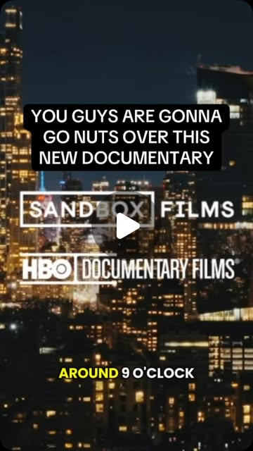

Instagram Reel

Wild Inside #documentary #whattowatch
video transcript (enriched by ClaudeClaw)
Summary
[CAPTION]
Wild Inside #documentary #whattowatch
[VIDEO]
Around nine o'clock at night on Bicentral Park, and I turn a corner, and there he was. A giant owl in the middle of the sidewalk.
[CAPTION]
Wild Inside #documentary #whattowatch
[VIDEO]
Around nine o'clock at night on Bicentral Park, and I turn a corner, and there he was. A giant owl in the middle of the sidewalk. The wingspan must have been six feet across. It became clear that this was potentially a Eurasian eagle owl, which there are no Eurasian eagle owls in North America. You have to understand an escaped zoo animal is it's like a plot from a movie. He lived his entire life in the zoo. His enclosure was very small, and his muscles had probably never fully developed. This owl can't even fly that well. He would crash into branches. Surely he won't be able to hunt. I did think he should be caught. I was like, this is horrible. He's starving and terrified. And then all of a sudden it's a huge accomplishment for a 13-year-old owl to learn how to fly and hunt in a week. That changed my opinion of what should happen to Flacco next. People were relating to Flacco. They were seeing him as a hero. Central Park has a famous owl named Flacco. Flacco. Flacco. Flacco Floc Flacco Flacco. I am addicted to Flacco. I loved his face. I loved his vibes. Those eyes are just like so mesmerizing. So Ollie, you're Flacco. He started leaving Central Park and branching out more. I looked up, and there he was on my air conditioner. He's been here for a couple of weeks now. We embraced him and he's part of the lower side. I see Flacco here. Ooh, ooh. Every day. Flaco, we love you. There's adrenaline involved in chasing Flacco, you know? Because you don't know where he's gonna go next. I hear him! Oh what happens when you take a bird that had been in a cage for his whole life? And you just let him go? He's wild, but he lived with people all his life. We've never seen anything like this ever.
View original on Instagram Reel →